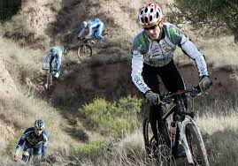

class="project-description">El ciclomontañismo podría definirse
como una rama del ciclismo que se practica
sobre zonas determinadas de un terreno de montaña, trochas y senderos rurales, pero para sus practicantes el ciclomontañismo representa mucho más que eso. 